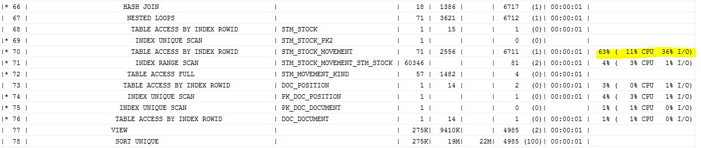

This was first published on https://www.dbi-services.com/blog/execution-plan-with-ash/ (2016-01-21)
Republishing here for new followers. The content is related to the versions available at the publication date.
. 
Here is a query I use when I’m on a system that has Diagnostic Pack (ASH) but no tuning Pack (SQL Monitor).
It displays the execution plan with dbms_xplan.display_cursor and adds the % of ASH samples in front of each plan operation.
Here is a small output example. Usual dbms_xplan output but showing the most active operation:
As you see, you can quickly focus on the important part of a 3 pages execution plan. The part that is responsible for most of the response time.
Query is here. Customize the first line to filter the statements you want.
with
"sql" as (select SQL_ID,CHILD_NUMBER,PLAN_HASH_VALUE,'' FORMAT from v$sql where sql_id='&1'),
"ash" as (
select sql_id,sql_plan_line_id,child_number,sql_plan_hash_value
,round(count(*)/"samples",2) load
,nvl(round(sum(case when session_state='ON CPU' then 1 end)/"samples",2),0) load_cpu
,nvl(round(sum(case when session_state='WAITING' and wait_class='User I/O' then 1 end)/"samples",2),0) load_io
from "sql" join
(
select sql_id,sql_plan_line_id,sql_child_number child_number,sql_plan_hash_value,session_state,wait_class,count(*) over (partition by sql_id,sql_plan_hash_value) "samples"
FROM V$ACTIVE_SESSION_HISTORY
) using(sql_id,child_number) group by sql_id,sql_plan_line_id,child_number,sql_plan_hash_value,"samples"
),
"plan" as (
-- get dbms_xplan result
select
sql_id,child_number,n,plan_table_output
-- get plan line id from plan_table output
,case when regexp_like (plan_table_output,'^[|][*]? *([0-9]+) *[|].*[|]$') then
regexp_replace(plan_table_output,'^[|][*]? *([0-9]+) *[|].*[|]$','\1')
END SQL_PLAN_LINE_ID
from (select rownum n,plan_table_output,SQL_ID,CHILD_NUMBER from "sql", table(dbms_xplan.display_cursor("sql".SQL_ID,"sql".CHILD_NUMBER,"sql".FORMAT)))
)
select PLAN_TABLE_OUTPUT||CASE
-- ASH load to be displayed
WHEN LOAD >0 THEN TO_CHAR(100*LOAD,'999')||'% (' || TO_CHAR(100*LOAD_CPU,'999')||'% CPU'|| TO_CHAR(100*LOAD_IO,'999')||'% I/O)'
-- header
WHEN REGEXP_LIKE (PLAN_TABLE_OUTPUT,'^[|] *Id *[|]') THEN ' %ASH SAMPLES'
end plan_table_output
from "plan" left outer join "ash" using(sql_id,child_number,sql_plan_line_id) order by sql_id,child_number,n
The idea is to simply parse the PLAN_TABLE_OUTPUT to get the LINE_ID and match that with the ASH SQL_PLAN_LINE_ID which by itself worth the price to buy Diagnostic Pack. Don’t hesitate to comment for improvement.
Originally shared on dba-village as a view to create so it seems that I use it for about 5 years.
{kind=link}